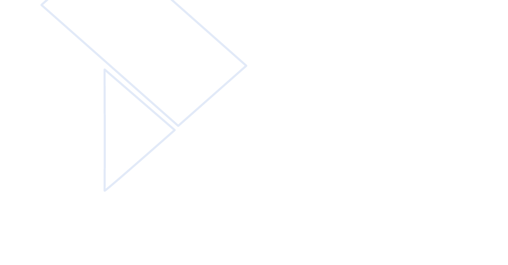
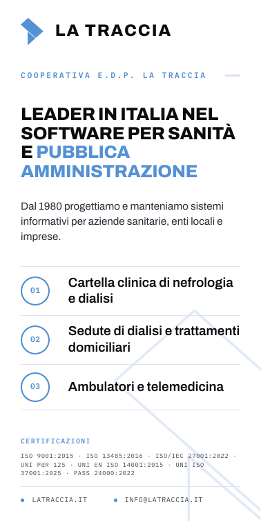
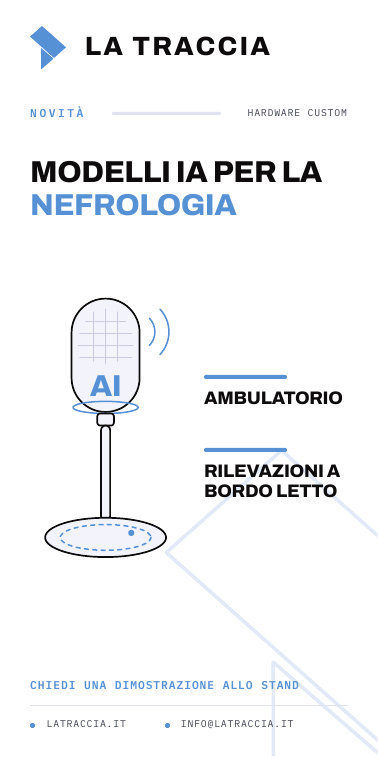
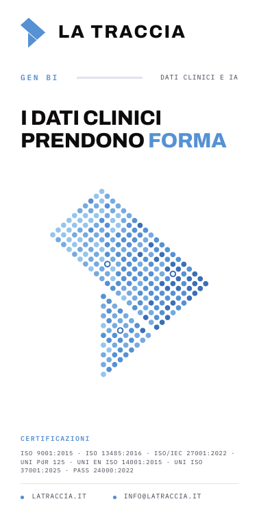

Allestimento stand
Congresso Nazionale SIN 2026 · Hilton Sorrento Palace · 10–13 novembre · spazio 63
Esecutivo di stampa dello stand
ParetiMiniature in scala 1:60 fra loro

01Parete sinistra420 × 220 cm
02Parete fondale 1270 × 220 cm
03Fondale 2 · quinta220 × 220 cm
04Parete destra470 × 220 cm
Totem esterniMiniature in scala 1:30 fra loro · due totem, due lati ciascuno

05Totem 1 · lato A100 × 200 cm

06Totem 1 · lato B100 × 200 cm
07Totem 2 · lato A100 × 200 cm

08Totem 2 · lato B100 × 200 cm
Consegna
Otto file, uno per pezzo stampato
I file e le specifiche
| N. | File | Pezzo | Misura file | Area visibile | Note |
|---|
| 01 | 01_parete-sinistra_420x220cm_scala-1-10.pdf | Parete sinistra | 420 × 220 cm | ~370 × 200 cm | Ultimi 30 cm a destra senza grafica, per la giunzione |
| 02 | 02_parete-fondale-1_270x220cm_scala-1-10.pdf | Parete fondale 1 | 270 × 220 cm | ~250 × 200 cm | Il logo in grande |
| 03 | 03_parete-fondale-2-quinta_220x220cm_scala-1-10.pdf | Fondale 2 · quinta | 220 × 220 cm | ~200 × 200 cm | Il logo in grande |
| 04 | 04_parete-destra_470x220cm_scala-1-10.pdf | Parete destra | 470 × 220 cm | ~450 × 200 cm | Solo grafica |
| 05 | 05_totem-1-lato-A_100x200cm_scala-1-10.pdf | Totem 1 · lato A | 100 × 200 cm | — | Istituzionale |
| 06 | 06_totem-1-lato-B_100x200cm_scala-1-10.pdf | Totem 1 · lato B | 100 × 200 cm | — | Modelli IA per la nefrologia |
| 07 | 07_totem-2-lato-A_100x200cm_scala-1-10.pdf | Totem 2 · lato A | 100 × 200 cm | — | Istituzionale, uguale al 05 |
| 08 | 08_totem-2-lato-B_100x200cm_scala-1-10.pdf | Totem 2 · lato B | 100 × 200 cm | — | Gen BI, dati clinici |
Specifiche
FormatoPDF vettoriale, una pagina per file
Scala1:10 — 1 mm nel file = 1 cm in opera
ColoreCMYK (DeviceCMYK); profilo di stampa a cura della tipografia
FontIncorporati: Archivo, IBM Plex Mono
ImmaginiNessuna: solo tracciati e testo, nessuna trasparenza
AbbondanzaNon aggiunta: misure dei file come indicate da Scuotto l'8/10/2026
Riferimenti
AllestitoreAlfonso Scuotto Group S.r.l. · preventivo n. 229/26 del 1/10/2026
ReferenteEmanuele Gravela · egravela@latraccia.it · +39 0835 336836